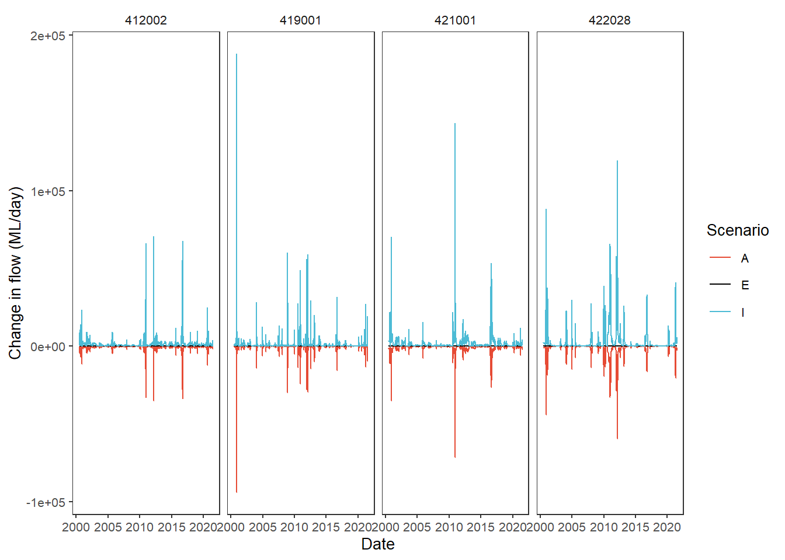
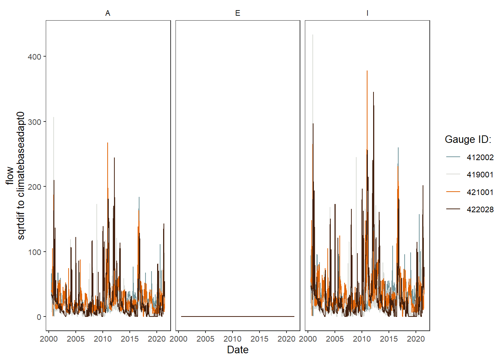

library(werptoolkitr)
library(ggplot2)
library(dplyr)Hydrographs
Overview
This notebook provides descriptive plots of the inputs to the toolkit (hydrographs), as they are often necessary for understanding the outputs. Though these are plots of the inputs, they do still allow various sorts of comparisons, whether simple visual comparisons or calculated differences, relative flows, etc.
Demonstration setup
As usual, we need paths to the data, in this case the hydrographs.
project_dir <- file.path('more_scenarios')
hydro_dir = file.path(project_dir, 'hydrographs')Scenario information
Get scenario metadata. This will be auto-found later, but leaving here until it firms up.
scenarios <- jsonlite::read_json(file.path(hydro_dir,
'scenario_metadata.json')) |>
tibble::as_tibble() |>
tidyr::unnest(cols = everything())Subset for demo
We have a lot of hydrographs, so for this demonstration, we will often use a subset.
gauges_to_plot <- c('412002', '419001', '422028', '421001')Standard scenario appearance
We want to have a consistent look for the scenarios across the project, with a logical ordering and standard colors. In future, this will potentially be able to be parsed from metadata, but at present we will define these properties manually. They are not included in the {werptoolkitr} package because they are project/analysis- specific.
sceneorder <- forcats::fct_reorder(scenarios$scenario_name, scenarios$flow_multiplier)
scene_pal <- make_pal(unique(scenarios$scenario_name),
palette = 'ggsci::nrc_npg',
refvals = 'base', refcols = 'black')Plotting hydrographs
We first read in the hydrographs, with a bit of standardised data processing. The read_hydro function knows about the standard data organisation format, and so pulls hydrographs from all scenarios.
scenehydros <- read_hydro(hydro_dir, long = TRUE, format = 'csv')Now, we can make a simple plot using the standard format and colors
plot_hydrographs(scenehydros,
gaugefilter = gauges_to_plot,
colors = scene_pal,
sceneorder = sceneorder)
The plot_hydrographs function has a scenariofilter argument if we want to drop some scenarios, which also shows that the scenario colors stay consistent, even if some are missing. Further, we can access the scales argument from ggplot2::facet_* and trans arguments of of ggplot2::cale_y_continuous (though just for the y-axis).
plot_hydrographs(scenehydros, gaugefilter = gauges_to_plot,
colors = scene_pal,
scenariofilter = c('up2', 'base', 'down2'),
scales = 'free_y', transy = 'log10',
sceneorder = sceneorder)Warning: Transformation introduced infinite values in continuous y-axis
Baselining
All plotting functions provide the ability to set a base level and calculate changes in the other levels. Here, we’ll show how that works under the hood, though it is usually done directly in the plot_* call, as we show later.
The baseline can be either a scenario name or a scalar. We could potentially use something else like historical daily means, but that is not currently implemented, largely because it hasn’t yet been necessary- one of the scenarios is always an obvious baseline.
Internally, the plot_* functions call baseline_compare, but baseline_compare can be used externally as well (and is actually quite useful in a number of places to baseline long data).
For example, we might want to calculate the difference between the modified scenarios and the base scenario. To do this, we simply pass in the data, the columns defining the groups compare_col, and the base_lev, that is, the value in compare_col that is the baseline situation. We also need to tell it which column contains the values, and the function comp_fun we want to use for the comparison. Here, we ask for the difference to the baseline provided by the base scenario.
dif_flow <- baseline_compare(scenehydros, compare_col = 'scenario',
base_lev = 'base',
values_col = 'flow',
comp_fun = difference,
group_cols = c('Date', 'gauge'))Now we can feed the dif_flow dataframe to plot_hydrographs directly. We see that, as expected, base is now a flat line at 0, while up2 and down2 go up and down, respectively.
plot_hydrographs(dif_flow,
gaugefilter = gauges_to_plot,
y_col = 'difference_flow',
colors = scene_pal,
sceneorder = sceneorder)
In practice, we would typically let the baselining happen internally to the plot_* functions so we aren’t carrying around and keeping track of a bunch of altered dataframes. To replicate the above plot, we only have to feed plot_hydrographs the base_lev and comp_fun arguments- it automatically uses the scenario column as the groupings. This is also true for plot_outcomes. If we want to do something more unusual with the baselining, we will need to do it external to the plot_* functions, at least until it becomes common enough for us to decide to incorporate the additional parsing.
We get a warning here about not being explicit about the group_cols argument to the baselining function, which just groups by everything non-numeric if that argument is not given. We can pass it since there are dots …, which we do in subsequent examples.
plot_hydrographs(scenehydros,
gaugefilter = gauges_to_plot,
colors = scene_pal,
base_lev = 'base',
comp_fun = difference,
sceneorder = sceneorder)Warning: `group_cols` argument not passed, but multiple
data points in scenario.
Trying to group by non-numeric columns Date, gauge,
but FAR better to be explicit.
The other default comparison function is relative , which has an add_eps argument to pull zeros up a bit and avoid divide-by-0 infinities. This is a bit silly to use for this test case, since the test case was created multiplicatively, so all down2 values are 0.5*base and up2 values are 2*base, for example. Now we give the group_cols argument to the baseline function through the dots, just as we pass the add_eps argument.
plot_hydrographs(scenehydros, gaugefilter = gauges_to_plot,
y_col = 'flow', colors = scene_pal,
base_lev = 'base', comp_fun = relative,
add_eps = min(scenehydros$flow[scenehydros$flow > 0])/10,
group_cols = c('Date', 'gauge'),
sceneorder = sceneorder)
Finally, as with other situations where we can pass functions, we can create a custom comparison function. The ability to pass anonymous functions in a list a la the aggregator is not yet implemented here. The two above are the logical functions to use, but for demonstration purposes, let’s create a function that finds the square root of the absolute value of the difference.
sqrtdif <- function(x,y) {sqrt(abs(x-y))}plot_hydrographs(scenehydros,
gaugefilter = gauges_to_plot,
colors = scene_pal,
base_lev = 'base',
comp_fun = sqrtdif,
group_cols = c('Date', 'gauge'),
sceneorder = sceneorder)One way this could be very useful is for lagged or windowed operations, which we do here very simply by getting the difference to the baseline one day previous. The use in practice would need to be developed carefully to address specific questions.
lagdif <- function(x, y) {x - lag(y)}plot_hydrographs(scenehydros,
gaugefilter = gauges_to_plot,
colors = scene_pal,
base_lev = 'base',
comp_fun = lagdif,
group_cols = c('Date', 'gauge'),
sceneorder = sceneorder)